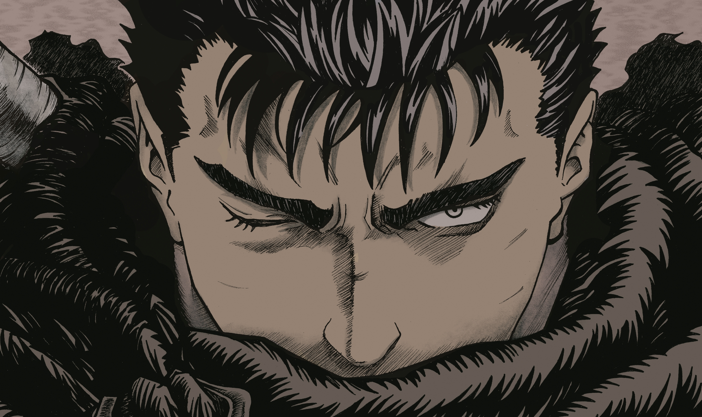

Guts, o Espadachim Negro

Guts é alto, com cabelo preto curto e musculoso.
Seu corpo é coberto de cicatrizes, sem o olho esquerdo e uma prótese no lugar do antebraço direito,
Seu corpo é coberto de cicatrizes, sem o olho esquerdo e uma prótese no lugar do antebraço direito,